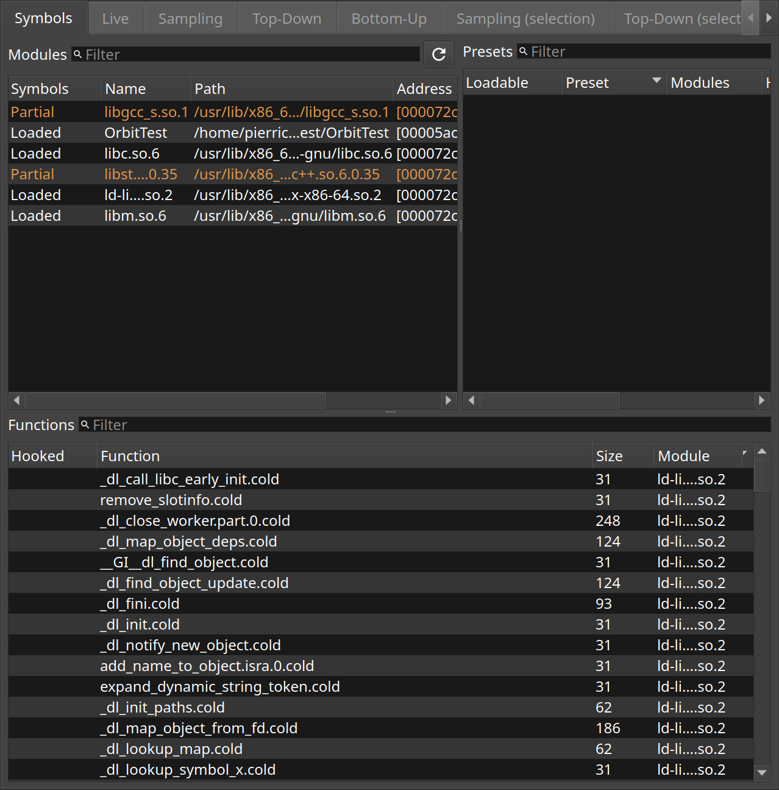
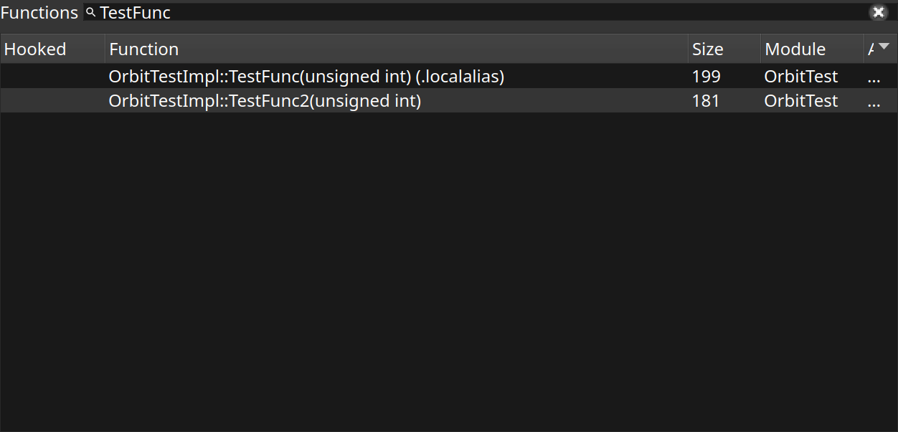

Modules and functions
The Symbols tab lists the modules loaded into the target and the functions their symbols name.
Orbit cannot show a function it has no name for, so loading symbols is the first thing it does after connecting. The Symbols tab shows how far it got: every module the target has mapped, and whether its symbols were found.
The lower list holds every function Orbit knows about. Selecting a function here is what marks it for dynamic instrumentation, so that the next capture times every call to it.

